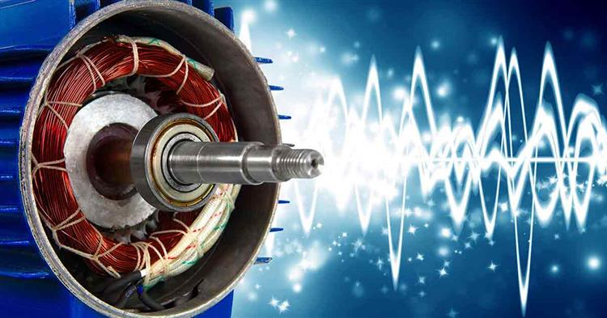

Advanced machine learning system for early detection of motor failures through vibration analysis

Industrial electric motors are critical components in manufacturing and production facilities, with unexpected failures causing significant downtime and financial losses. This project implements a sophisticated machine learning-powered predictive maintenance system that analyzes vibration patterns to detect potential motor faults before catastrophic failure occurs.
By continuously monitoring motor vibrations and applying advanced signal processing techniques combined with ensemble learning algorithms, the system achieves 98% accuracy in fault classification, enabling proactive maintenance scheduling and preventing costly unplanned downtime.
Identifies various fault types including bearing defects, imbalance, misalignment, and rotor issues
Achieves 98% classification accuracy using ensemble learning techniques
Processes vibration data in real-time to provide immediate fault alerts
Designed to monitor multiple motors simultaneously across industrial facilities
Accelerometers mounted on motor casings capture three-axis vibration data at high sampling rates (typically 10-20 kHz). The system collects data under various operating conditions including different load levels and speeds to build a comprehensive dataset representing normal and faulty operation.
Raw vibration signals undergo several preprocessing steps. Fast Fourier Transform (FFT) converts time-domain signals to frequency domain, revealing characteristic frequency components associated with specific fault types. Additional features are extracted through wavelet decomposition, statistical analysis, and envelope analysis to capture both transient and steady-state characteristics.
The system extracts over 40 statistical and spectral features from the processed signals, including RMS values, kurtosis, skewness, peak frequencies, harmonic components, and spectral energy distributions. Feature selection techniques identify the most discriminative features, reducing dimensionality while maintaining classification performance.
Two powerful ensemble algorithms form the core classification engine. Random Forest provides robust baseline performance with inherent feature importance rankings, while XGBoost offers superior handling of imbalanced datasets and complex nonlinear relationships. A voting ensemble combines both models' predictions for optimal accuracy.
The system successfully classifies the following motor conditions:
Extensive validation using k-fold cross-validation and holdout test sets demonstrates consistent performance across different operating conditions. Confusion matrix analysis reveals minimal misclassification between fault types, with most errors occurring between similar fault signatures that even human experts find challenging to distinguish.
Feature importance analysis shows that frequency-domain features, particularly those related to bearing fault frequencies and harmonic patterns, contribute most significantly to classification accuracy.
Implementing this predictive maintenance system delivers substantial operational benefits: